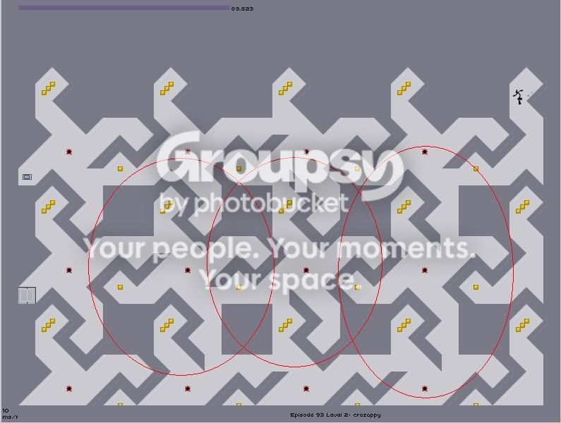

#8218 1 2006-04-20T19:42:03Z -st- Well today I was playing 93-2 and I noticed swastika shapes on the map all over. Im not Jewish but I think thats kind of harsh.
SS:

#167210 2 2006-04-20T19:47:06Z greenpencil I tilted my head and it was weird........ Try that......

MN is bad.....
#167211 3 2006-04-20T19:48:36Z wilderness Like OMFG!! It's Ze Nazis!! WTF?!?!?
#167213 4 2006-04-20T20:00:48Z Guest I'm not seeing it.
#167214 5 2006-04-20T20:02:23Z abcdman2 You said your not Jewish. Isnt that a nazi sign?
#167215 6 2006-04-20T20:15:01Z Silent_witness Hey abcdman2, -st- was not saying, or so I gathered, that the swastika was a Jewish sign that he happened to know about even though he isn't one, but, rather, I think that he mentioned Jews because the swastika bears/holds much meaning to Jews worldwide, and he was saying that he, not even being a Jew, thus having more cause to take affront, still found "them", the so-called swastikas, out of place and maybe even poorly chosen. Personally, I think that if -st- is bothered by them then he should just not play that level, but, I for one, fail to see how there is any real harm or "evilness" to episode 93 level 2.
#167228 7 2006-04-20T20:46:13Z Fifix Hehe... foolish children... that is not svastika. Actually, that is, but in a non-Hilter-way. You see, the svastika was an ancient paganic symbol of power (in Baltic States and up North - vikings n stuff), and that evil Hitler stole it for his armies. And everyone thinks it's bad. Besides, don't you think we're splitting hair here ? It's just a pattern. Get over it.
#167230 8 2006-04-20T20:51:14Z Giacomo ...don't you think we're splitting hair here ?
[sarcasm]I don't think I see hair on your avatar anyway.

[/sarcasm] But still, that's a peculiar map. I don't understand why it matters anyway. It's only a map. Not a sign or anything.
#167231 9 2006-04-20T20:52:52Z Silent_witness Hehe... foolish children... that is not svastika. Actually, that is, but in a non-Hilter-way. Besides, don't you think we're splitting hair here ? It's just a pattern. Get over it.
Ha, I agree with you wholeheartedly, Fifix, except for part of your above quote, because
we aren't splitting frickin' hairs, it is just -st- who is splitting hairs, as is to be expected.
#167249 10 2006-04-20T21:26:01Z abcdman2 splitting hairs... Hmm...
#167340 11 2006-04-21T00:45:19Z Atilla The swastika has also been used as a holy symbol in Asia for centuries. It just got highjacked. Not to mention that the resemblence in that level was somewhat tenous, and I wouldn't even have noticed it if this hadn't been posted.
#167346 12 2006-04-21T00:56:30Z greenpencil That's me! I'm buddhist. Search wikipedia for the swastika and saustika.
#167416 13 2006-04-21T04:04:44Z -st- Hehe... foolish children... that is not svastika. Actually, that is, but in a non-Hilter-way. Besides, don't you think we're splitting hair here ? It's just a pattern. Get over it.
Ha, I agree with you wholeheartedly, Fifix..... .....except for part of your above quote, because we aren't splitting frickin' hairs, it is just -st- who is splitting hairs, as is to be expected.....
.....except for part of your above quote, because we aren't splitting frickin' hairs, it is just -st- who is splitting hairs, as is to be expected.....
Silent I don't think you have one helpful post in these forums, its all about nagging someone or bugging them about their grammar. So please, do us all a favor and stop spamming and only post helpful replies.
Thankyou!

#167426 14 2006-04-21T05:08:30Z Silent_witness Silent I don't think you have one helpful post in these forums, its all about nagging someone or bugging them about their grammar. So please, do us all a favor and stop spamming and only post helpful replies.
Hey -st-, you are probably right, I am sorry.
#167435 15 2006-04-21T06:59:35Z -st- Another unhelpful post, please stop.

#167437 16 2006-04-21T07:09:37Z Pembie ill have to agree with st, silent most of your posts are a tad unhelpful, you seem to double post alot too, which is againts forum rules.
anyway about the map, its a pattern get over it.
#167439 17 2006-04-21T07:15:48Z Silent_witness I appreciate the polite criticism, Pembie, and I will try to improve, although, not that this is any excuse, I only joined the forum two days ago and am still trying to get the hang of things.
P.S. What is double posting? Once people suggested that I just amend my last posts, that is what I always try to do, at least until someone writes something else new for me to reply to.
#167440 18 2006-04-21T07:19:46Z Pembie double posting is when you post twice in a row without someone posting before the second one, read the forum rules right now before postng again.
WooHoo 100 post me special
#167442 19 2006-04-21T07:32:51Z theshav Honestly, you guys. Cut it out.
Another unhelpful post, please stop.
What was that? Was that truly helpful? I rest my case.
About the swastika. Its just a pattern. Also, is it really important that M&R put something that looked kind of like a swastika?
#167448 20 2006-04-21T07:53:37Z Silent_witness Content removed due to ingermain subject matter.
#167449 21 2006-04-21T08:02:37Z Pembie For your information there was one word spelt wrong, there was grammatical errors as this is a forum not an essay. now this is spam and so was yours, i personally think you need a warning or 2.
#167450 22 2006-04-21T08:56:58Z theshav Gah. If you are gonna start arguing with each other, do it in pm's. Don't do it in a perfectly good thread/
#167453 23 2006-04-21T10:05:43Z Ultima Perfectly Good Thread?
The last 7 posts were as bad (not including yours theshav) were as bad as my arguments with Jiggerjaw.
On topic: This was probably an accident. If people do it on Numa, don't take any notice, if you don't give it attention, it will (probably) go away.
#167473 24 2006-04-21T13:27:25Z ZZ9 I don't actually see the swastika.

Besides, it doens't really matter. I would only haves bones to pick if it was used in an offending manner.
#167508 25 2006-04-21T15:54:32Z kai The swastika is an ancient symbol that has been used for over 3,000 years. (That even predates the ancient Egyptian symbol, the Ankh!) Artifacts such as pottery and coins from ancient Troy show that the swastika was a commonly used symbol as far back as 1000 BCE.
During the following thousand years, the image of the swastika was used by many cultures around the world, including in China, Japan, India, and southern Europe. By the Middle Ages, the swastika was a well known, if not commonly used, symbol but was called by many different names:
China - wan
England - fylfot
Germany - Hakenkreuz
Greece - tetraskelion and gammadion
India - swastika
Though it is not known for exactly how long, Native Americans also have long used the symbol of the swastika.
The Original Meaning:
The word "swastika" comes from the Sanskrit svastika - "su" meaning "good," "asti" meaning "to be," and "ka" as a suffix.
Until the Nazis used this symbol, the swastika was used by many cultures throughout the past 3,000 years to represent life, sun, power, strength, and good luck.
...
By the way, I was raised jewish and I didn't take offense to this.......but then again, I'm also german. I joke about it all the time. When people ask what nationality I am, I reply "Why, I'm a jew raping nazi f***er, of course."
I either get a laugh or a horrified look, and if its the latter I promply explain myself.
#167962 26 2006-04-23T01:44:28Z elaxion also, the swastica used to be a symbol of peace
#167963 27 2006-04-23T01:45:43Z -st- im talking modern times, today if anyone saw the swastika would think oh nazis not oh back in the ages it ment this, this, and this.
#167967 28 2006-04-23T01:50:33Z elaxion not to argue with yopu but a hippie style vegetarian at my school tattooed herself on the butt with a swastica, oh, and she showed it to me....he he
#167972 29 2006-04-23T01:56:39Z iangb The Swastika isn't important. What is important is the bad (and rightly so) image associated with the symbol. In this level that doesn't really apply. It's only in NUMA maps with Hitler references in the discription that you can call 'harsh'. Otherwise it's over-the-top political correctness.
#167976 30 2006-04-23T02:02:41Z elaxion explain what you mean because as far as i can tell, this is a level in the real game
#167985 31 2006-04-23T02:20:08Z iangb There have been numa maps made with the map comment as 'Heil Hitler' etc... I can accept it when people get offended over that. But reacting like that to this (metanet) level is just getting offended almost for the sake of getting offended. Pointless.